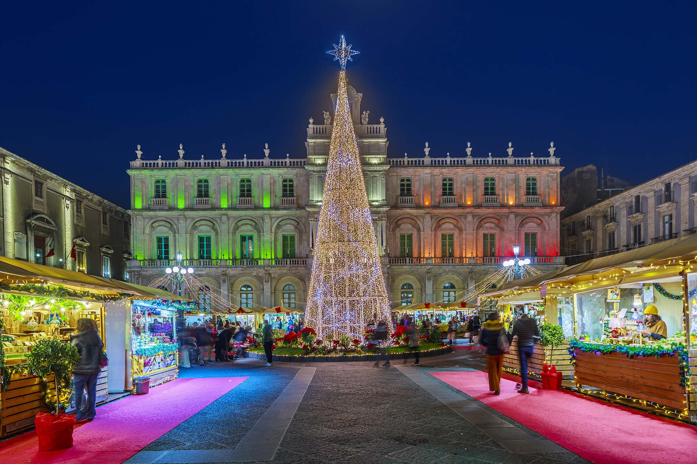
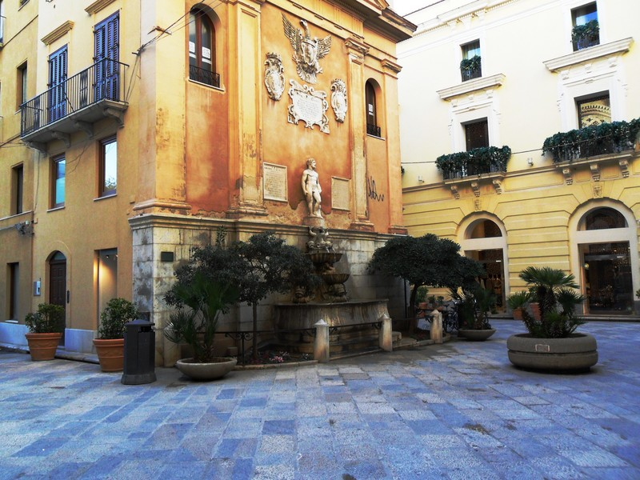

Agrigento
Oltre alla Valle dei Templi, Agrigento è conosciuta per la leggenda di Piazza San Gerlando. Secondo la leggenda, in questo luogo avvenne il miracolo della conversione del signore saraceno ad opera di San Gerlando, il quale riuscì a scacciare le antiche ombre del paganesimo. Si narra inoltre che la piazza sia protetta dal santo contro i terremoti e le frane.
Scopri di più
Caltanissetta
La piazza principale di Caltanissetta è Piazza Garibaldi che accoglie al suo centro la Fontana del Tritone, opera in bronzo che è diventata il simbolo stesso di Caltanissetta e delle sue radici mitologiche. La leggenda narra di un mostruoso tritone che terrorizzava le coste siciliane, finché non fu domato e trasformato in pietra per sorvegliare il cuore dell'isola e le sue preziose miniere.
Scopri di più
Catania
Una delle piazze più conosciute di Catania è Piazza Università caratterizzata da quattro candelabri bronzei che custodiscono le leggende più celebri della città. Ogni scultura narra un frammento di mito: la giovane Gammazita che scelse la morte nel pozzo per onore, i fratelli Pii che sfidarono la lava per salvare i genitori, il paladino Uzeta che sconfisse i giganti saraceni e il subacqueo Colapesce, prigioniero eterno sotto l'isola.
Scopri di più
Enna
Condiderato il Belvedere di Enna, Piazza Francesco Crispi ospita una terrazza panoramica sospesa sul cuore della Sicilia che ospita la fontana del Ratto di Proserpina, copia del celebre capolavoro del Bernini. Secondo il mito, fu proprio presso il vicino lago di Pergusa che Plutone, re degli Inferi, emerse dalle viscere della terra per rapire la giovane Proserpina mentre coglieva fiori.
Scopri di più
Messina
La piazza principale di Messina è Piazza Unità d’Italia dominata dalla monumentale Fontana del Nettuno che celebra il legame indissolubile tra la città e lo Stretto. La leggenda vuole che il dio del mare, colpito dalla bellezza della posizione di Messina, abbia deciso di placare le furie dei mostri Scilla e Cariddi proprio davanti alle sue rive per proteggere i naviganti.
Scopri di più
Palermo
La piazza più famosa di Palermo è Piazza Pretoria detta Piazza della Vergogna. La leggenda narra che il nome derivi dall'indignazione delle monache di clausura dei conventi vicini che, turbate dalla nudità delle numerose statue che adornano la fontana, ne avrebbero sfregiato i nasi per mitigarne l'impudenza.
Scopri di più
Ragusa
Piazza della Repubblica è il cuore antico di Ragusa Ibla, un crocevia monumentale su cui svetta la Chiesa delle Anime Sante del Purgatorio con il suo iconico campanile. La piazza è intrisa di una devozione profonda e misteriosa, legata alla credenza popolare che le anime dei defunti vaghino tra questi vicoli in cerca di preghiere per abbreviare il loro passaggio verso il Paradiso.
Scopri di più
Siracusa
Piazza Archimede è il cuore pulsante di Ortigia, un salotto barocco dove l’eleganza dei palazzi nobiliari fa da cornice alla monumentale Fontana di Diana. La leggenda narra che Diana, per salvare la ninfa, la trasportò dalle sponde della Grecia fino a Siracusa, facendola sgorgare come fonte d'acqua dolce proprio in riva al mare.
Scopri di più
Trapani
Piazza Saturno è uno degli angoli più intimi e carichi di storia di Trapani, dominata dalla fontana barocca dedicata al mitico dio del tempo. La leggenda vuole che Saturno sia il vero fondatore della città: si narra che il dio, dopo essere stato spodestato dal figlio Giove, cadde dal cielo brandendo una falce che, toccando il mare, diede origine alla caratteristica forma a falce del promontorio trapanese.
Scopri di più